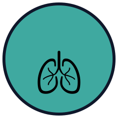

Airway & Respiratory Expert
Airway & Respiratory specialty badge
What it took
Score 90+ unassisted, patient alive, on three different airway & respiratory cases.
This is practice on a simulator. Earning this badge is not a certification or a qualification, and it does not certify anyone's clinical competence. It shows only that a case was completed in MediSim ER, a training tool.